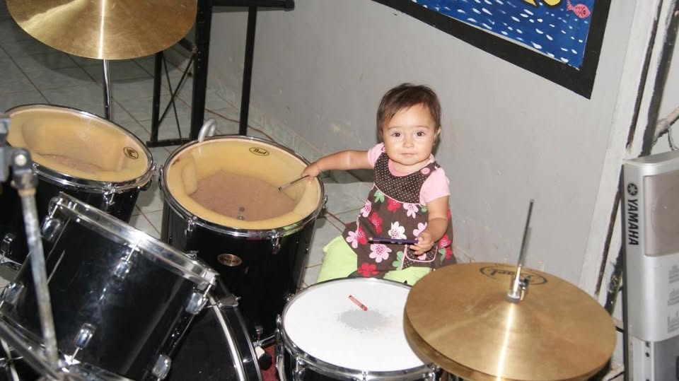
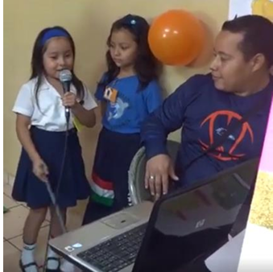
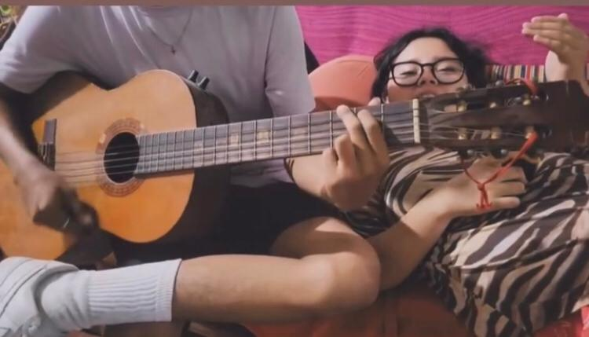
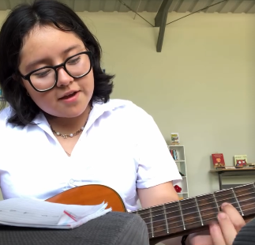

La música como refugio
La música ha sido una parte esencial de mi vida desde pequeña. No solo la escucho por entretenimiento, también me ayuda a sentir tranquilidad y paz cuando más lo necesito. Cada canción tiene la capacidad de cambiar mi estado de ánimo y acompañarme en diferentes momentos importantes de mi vida personal y emocional.

Primeras experiencias
Desde pequeña he estado muy relacionada con el canto y la música. Siempre disfruté expresarme por medio de canciones y presentaciones especiales junto a personas importantes para mí. Uno de mis recuerdos favoritos es cantar con mi papá en la iglesia, porque representaba unión, alegría, confianza y momentos muy felices en familia.

Crecimiento y Metas
Mi amor por la música ha crecido muchísimo con el paso del tiempo. Me encanta aprender nuevas técnicas, descubrir géneros diferentes y mejorar cada día mi manera de cantar frente a otras personas. Siento que cada estilo musical tiene algo especial que aportar a mi vida y deseo continuar creciendo tanto profesional como personalmente siempre.

Inspiración y Pasión
La música también se ha convertido en una fuente de inspiración constante en mi vida diaria. Cada vez que practico o aprendo algo nuevo, siento que desarrollo más confianza en mí misma y en mis capacidades artísticas. Disfruto compartir momentos musicales con otras personas mientras continúo fortaleciendo mi pasión.
